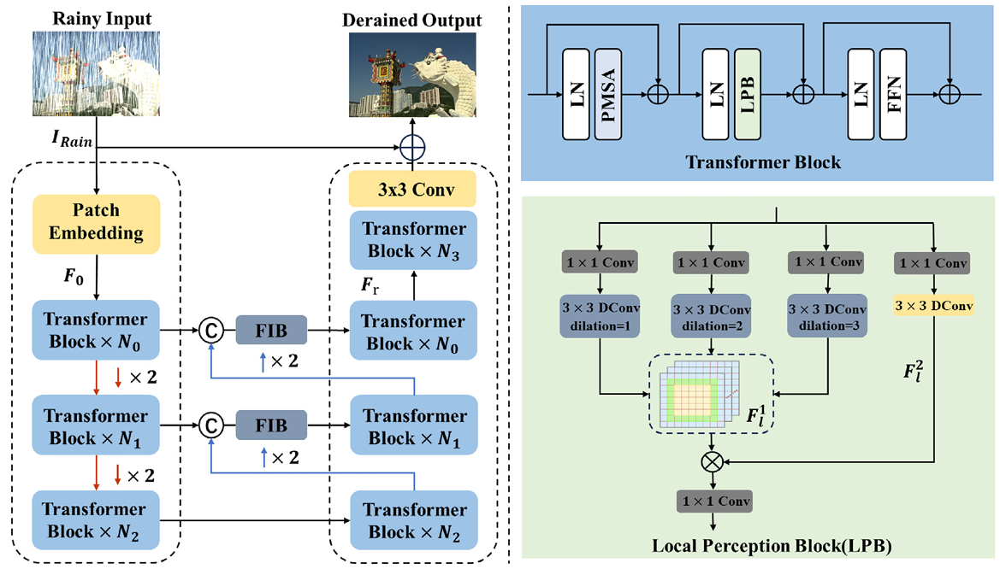

|
Prompt-Guided Sparse Transformer for Remote Sensing Image Dehazing
Haobo Dong, Tianyu Song, Xuanyu Qi, Guiyue Jin, Jiyu Jin, and Ling Ma
IEEE Geoscience and Remote Sensing Letters, 2024.
[Paper]
|
 |
An efficient parallel self-attention transformer for CSI feedback
Ziang Liu, Tianyu Song, Ruohan Zhao, Jiyu Jin, Guiyue Jin
Physical Communication, 2024.
[Paper]
|
 |
Hybrid CNN-transformer network for efficient CSI feedback
Ruohan Zhao, Ziang Liu, Tianyu Song, Jiyu Jin, Guiyue Jin, Lei Fan
Physical Communication, 2024.
[Paper]
|
 |
A Lightweight Cloud and Cloud Shadow Detection Transformer With Prior-Knowledge Guidance
Shumin Fan, Tianyu Song, Guiyue Jin, Jiyu Jin, Qing Li, and Xinghui Xia
IEEE Geoscience and Remote Sensing Letters, 2024.
[Paper]
|
|  |
Dual-branchcollaborative transformer for effective image deraining
Xuanyu Qi, Tianyu Song, Haobo Dong, Jiyu Jin, Guiyue Jin, Pengpeng Li
Journal of Visual Communication and Image Representation, 2024.
[Paper]
|
 |
Exploring high-quality image deraining Transformer via effective large kernel attention
Haobo Dong, Tianyu Song, Xuanyu Qi, Jiyu Jin, Guiyue Jin, Lei Fan
The Visual Computer, 2024.
[Paper]
|
 |
Exploring acontext-gated network for effective image deraining
Tianyu Song, Pengpeng Li, Shumin Fan, Jiyu Jin, Guiyue Jin, Lei Fan
Journal of Visual Communication and Image Representation, 2024.
[Paper]
|
 |
Exploring an efficient frequency-guidance transformer for single image deraining
Tianyu Song, Shumin Fan, Jiyu Jin, Guiyue Jin, Lei Fan
Signal, Image and Video Processing, 2023.
[Paper]
|
 |
Learning an Effective Transformer for Remote Sensing Satellite Image Dehazing
Tianyu Song, Shumin Fan, Pengpeng Li, Jiyu Jin, Guiyue Jin, Lei Fan
IEEE Geoscience and Remote Sensing Letters, 2023.
[Paper]
|
 |
Dense-Gated Network for Image Super-Resolution
Shumin Fan, Tianyu Song, Pengpeng Li, Jiyu Jin, Guiyue Jin, Zhongmin Zhu
Neural Processing Letters, 2023.
[Paper]
|
 |
Image Deraining Transformer with Sparsity and Frequency Guidance
Tianyu Song, Pengpeng Li, Guiyue Jin, Jiyu Jin, Shumin Fan, Xiang Chen
IEEE International Conference on Multimedia and Expo (ICME), 2023.
[Paper]
|
 |
Scale-Space Feature Recalibration Network for Single Image Deraining
Pengpeng Li, Jiyu Jin, Guiyue Jin, Lei Fan
Multidisciplinary Digital Publishing Institute, 2022.
[Paper]
|
 |
Deep Scale-space Mining Network for Single Image Deraining
Pengpeng Li, Jiyu Jin, Guiyue Jin, Lei Fan, Xiao Gao, Tianyu Song, Xiang Chen
CVPRW, 2022.
[Paper]
|
 |
MCAD-NET: Multi-scale Coordinate Attention Dense Network for Single Image Deraining
Pengpeng Li, Jiyu Jin, Guiyue Jin, Jiaqi Shi, Lei Fan
Communications and Networking, 2021.
[Paper]
|
获奖、荣誉称号
- 辽宁省优秀硕士学位论文指导教师
- 辽宁省通信学会常务理事
- 辽宁省民族科普协会常务理事
- 国际学术会议IET Greenets 2019 大会主席
- ICCVE 2015 程序委员会委员
- IEEE WCNC 2013 程序委员会委员
- ISWPC 2012 副主席
- ChinaCom 2011 分会场主席
科研项目
- 鱼类产品智能化分类检测算法研究，辽宁省教育厅
- 一种远程设备跟踪管理系统及方法，企业项目
- 清洁能源集热发电系统开发，企业项目
- 基于人工智能的企业碳排放管理及边缘智能设备研发与应用，辽宁省教育厅
- 面向自动驾驶的图像去雨研究，辽宁省教育厅
学术服务
期刊审稿人:
会议审稿人:
教学活动
硕士: 《数字通信》
本科: 《通信系统仿真》、《数字通信》
留学生: 《Python基础》